VAE+PE#
Train VAE#
%load_ext autoreload
%autoreload 2
The autoreload extension is already loaded. To reload it, use:
%reload_ext autoreload
import numpy as np
from starccato_jax.data import load_data
import matplotlib.pyplot as plt
import os
HERE = os.getcwd()
model_savedir = f"{HERE}/model_out"
train_data, val_data = load_data()
plt.figure(figsize=(3, 2.5))
for i in range(100):
plt.plot(train_data[i], color='k', lw=0.3, alpha=0.2);
plt.savefig(f"{model_savedir}/training_data.png")
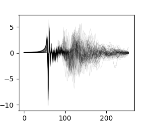
from starccato_jax.trainer import train_vae, Config
config = Config(
latent_dim=8,
epochs=100,
cyclical_annealing_cycles=0
)
train_vae(train_data, val_data, config, save_dir=model_savedir)
Epoch 0: Train Loss: 1.194e+00, Val Loss: 1.193e+00
---------------------------------------------------------------------------
TypeError Traceback (most recent call last)
Cell In[30], line 9
1 from starccato_jax.trainer import train_vae, Config
3 config = Config(
4 latent_dim=8,
5 epochs=100,
6 cyclical_annealing_cycles=0
7 )
----> 9 train_vae(train_data, val_data, config, save_dir=model_savedir)
File ~/Documents/projects/starccato_jax/src/starccato_jax/trainer.py:93, in train_vae(train_data, val_data, config, save_dir, print_every, plot_every)
91 plot_training_metrics(metrics, fname=f"{save_dir}/loss.png")
92 plot_reconstructions(model_data, val_data, fname=f"{save_dir}/reconstructions.png")
---> 93 save_model(state, config, metrics, savedir=save_dir)
94 # _save_losses(train_losses, val_losses, fname=f"{save_dir}/losses.txt")
95 print(f"Training complete. (time: {time.time() - t0:.2f}s)")
File ~/Documents/projects/starccato_jax/src/starccato_jax/io.py:45, in save_model(state, config, train_metrics, savedir)
42 f.create_dataset("config", data=config_json)
44 with h5py.File(f"{savedir}/{LOSS_FNAME}", "w") as f:
---> 45 loss_json = json.dumps(asdict(metrics))
46 f.create_dataset("losses", data=loss_json)
49 print(f"Model saved to {filename}")
File /usr/local/Cellar/python@3.11/3.11.10/Frameworks/Python.framework/Versions/3.11/lib/python3.11/json/__init__.py:231, in dumps(obj, skipkeys, ensure_ascii, check_circular, allow_nan, cls, indent, separators, default, sort_keys, **kw)
226 # cached encoder
227 if (not skipkeys and ensure_ascii and
228 check_circular and allow_nan and
229 cls is None and indent is None and separators is None and
230 default is None and not sort_keys and not kw):
--> 231 return _default_encoder.encode(obj)
232 if cls is None:
233 cls = JSONEncoder
File /usr/local/Cellar/python@3.11/3.11.10/Frameworks/Python.framework/Versions/3.11/lib/python3.11/json/encoder.py:200, in JSONEncoder.encode(self, o)
196 return encode_basestring(o)
197 # This doesn't pass the iterator directly to ''.join() because the
198 # exceptions aren't as detailed. The list call should be roughly
199 # equivalent to the PySequence_Fast that ''.join() would do.
--> 200 chunks = self.iterencode(o, _one_shot=True)
201 if not isinstance(chunks, (list, tuple)):
202 chunks = list(chunks)
File /usr/local/Cellar/python@3.11/3.11.10/Frameworks/Python.framework/Versions/3.11/lib/python3.11/json/encoder.py:258, in JSONEncoder.iterencode(self, o, _one_shot)
253 else:
254 _iterencode = _make_iterencode(
255 markers, self.default, _encoder, self.indent, floatstr,
256 self.key_separator, self.item_separator, self.sort_keys,
257 self.skipkeys, _one_shot)
--> 258 return _iterencode(o, 0)
File /usr/local/Cellar/python@3.11/3.11.10/Frameworks/Python.framework/Versions/3.11/lib/python3.11/json/encoder.py:180, in JSONEncoder.default(self, o)
161 def default(self, o):
162 """Implement this method in a subclass such that it returns
163 a serializable object for ``o``, or calls the base implementation
164 (to raise a ``TypeError``).
(...)
178
179 """
--> 180 raise TypeError(f'Object of type {o.__class__.__name__} '
181 f'is not JSON serializable')
TypeError: Object of type ArrayImpl is not JSON serializable
 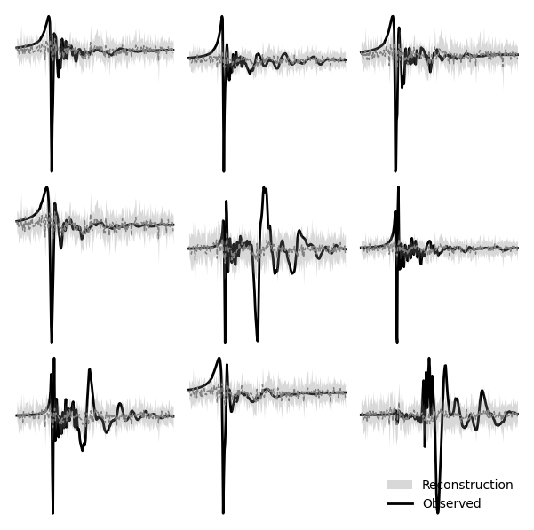
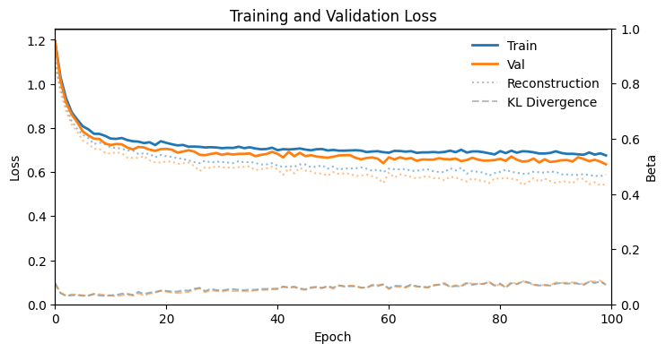
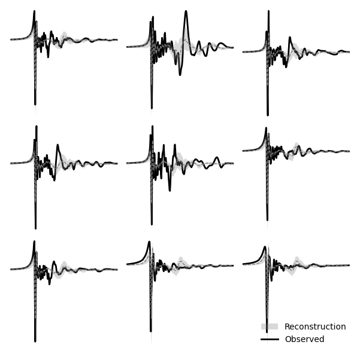
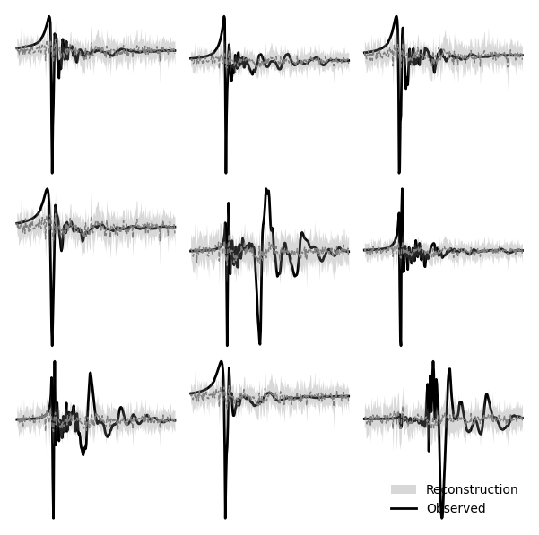
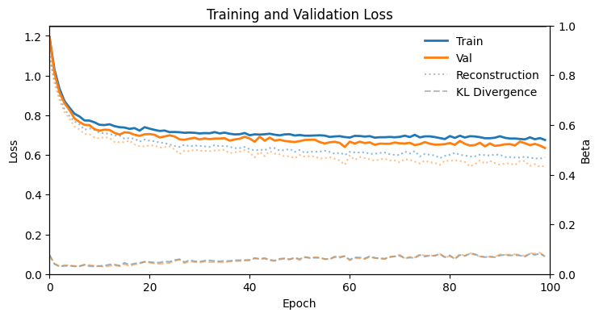
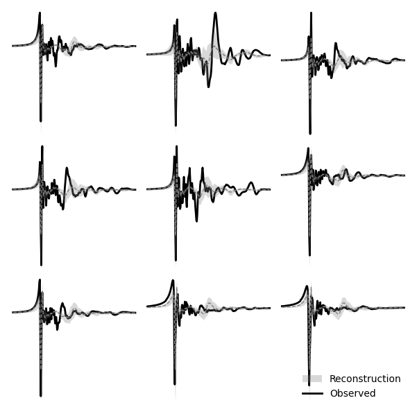
Loss |
Reconstruction |
|---|---|
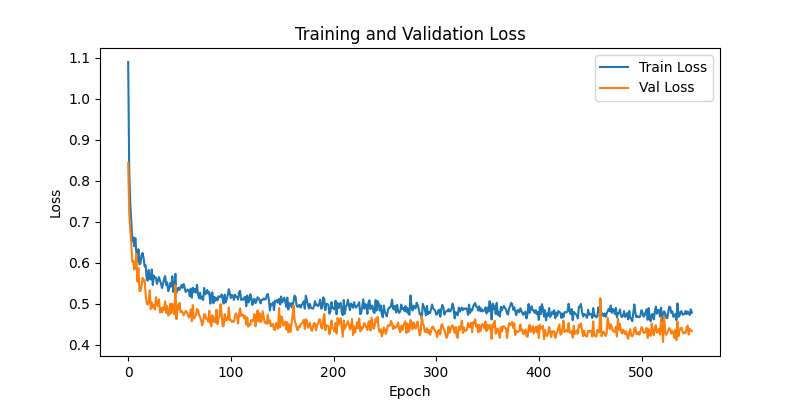 |
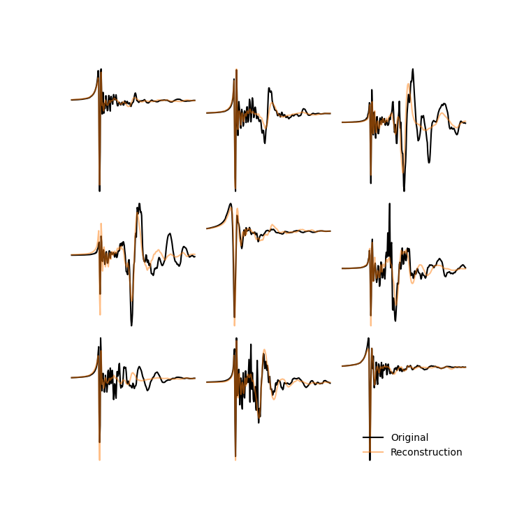 |
from starccato_jax.io import load_model
from starccato_jax.model import generate
import jax
n = len(val_data)
zs = jax.random.uniform(jax.random.PRNGKey(0), (n, config.latent_dim))
model_data = load_model(model_savedir)
generated_signal = generate(model_data, z=zs)
for i in range(n):
kwgs = dict(lw=0.1, alpha=0.1)
plt.plot(generated_signal[i], color='tab:orange', **kwgs)
plt.plot(val_data[i], color='k', **kwgs)
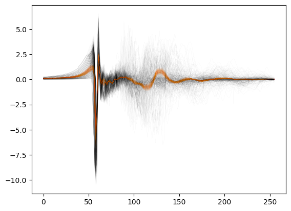
MCMC on one validation dataset#
from starccato_jax.sampler import sample_latent_vars_given_data
mcmc_out = sample_latent_vars_given_data(train_data[54], model_savedir, rng_int=0, outdir=f"{HERE}/out_mcmc2")
/Users/avaj0001/Documents/projects/starccato_jax/src/starccato_jax/sampler.py:40: UserWarning: There are not enough devices to run parallel chains: expected 2 but got 1. Chains will be drawn sequentially. If you are running MCMC in CPU, consider using `numpyro.set_host_device_count(2)` at the beginning of your program. You can double-check how many devices are available in your system using `jax.local_device_count()`.
mcmc = MCMC(nuts_kernel, num_warmup=500, num_samples=2000, num_chains=nchains, progress_bar=True)
sample: 100%|██████████| 2500/2500 [00:05<00:00, 430.70it/s, 31 steps of size 8.65e-02. acc. prob=0.80]
sample: 100%|██████████| 2500/2500 [00:03<00:00, 725.51it/s, 31 steps of size 9.18e-02. acc. prob=0.81]
mean sd hdi_3% hdi_97% mcse_mean mcse_sd ess_bulk ess_tail \
z[0] 0.732 0.233 0.258 1.000 0.005 0.004 1782.0 1784.0
z[1] 0.722 0.225 0.296 1.000 0.005 0.004 1898.0 2120.0
z[2] 0.492 0.280 0.001 0.932 0.006 0.005 1818.0 1695.0
z[3] 0.342 0.255 0.001 0.818 0.006 0.005 1864.0 1748.0
z[4] 0.070 0.073 0.000 0.205 0.001 0.001 1853.0 1544.0
z[5] 0.424 0.265 0.000 0.886 0.006 0.005 1879.0 1963.0
z[6] 0.656 0.229 0.228 0.999 0.006 0.004 1635.0 1780.0
z[7] 0.882 0.117 0.664 1.000 0.002 0.002 2249.0 1867.0
r_hat
z[0] 1.0
z[1] 1.0
z[2] 1.0
z[3] 1.0
z[4] 1.0
z[5] 1.0
z[6] 1.0
z[7] 1.0
import arviz as az
inf_data = az.from_numpyro(mcmc_out)
az.summary(inf_data, var_names=['z'])
| mean | sd | hdi_3% | hdi_97% | mcse_mean | mcse_sd | ess_bulk | ess_tail | r_hat | |
|---|---|---|---|---|---|---|---|---|---|
| z[0] | 0.665 | 0.255 | 0.167 | 1.000 | 0.004 | 0.003 | 4032.0 | 2538.0 | 1.0 |
| z[1] | 0.691 | 0.255 | 0.191 | 1.000 | 0.004 | 0.003 | 3499.0 | 2218.0 | 1.0 |
| z[2] | 0.371 | 0.257 | 0.001 | 0.836 | 0.004 | 0.003 | 3778.0 | 2524.0 | 1.0 |
| z[3] | 0.937 | 0.064 | 0.821 | 1.000 | 0.001 | 0.001 | 4269.0 | 1812.0 | 1.0 |
| z[4] | 0.930 | 0.063 | 0.813 | 1.000 | 0.001 | 0.001 | 3241.0 | 1865.0 | 1.0 |
| z[5] | 0.245 | 0.215 | 0.000 | 0.671 | 0.003 | 0.003 | 3919.0 | 1991.0 | 1.0 |
| z[6] | 0.232 | 0.208 | 0.000 | 0.634 | 0.004 | 0.004 | 3176.0 | 1761.0 | 1.0 |
| z[7] | 0.513 | 0.285 | 0.061 | 0.994 | 0.004 | 0.003 | 4266.0 | 1838.0 | 1.0 |
| z[8] | 0.397 | 0.282 | 0.001 | 0.905 | 0.005 | 0.004 | 4029.0 | 2473.0 | 1.0 |
| z[9] | 0.333 | 0.259 | 0.000 | 0.823 | 0.004 | 0.004 | 3750.0 | 2122.0 | 1.0 |
| z[10] | 0.246 | 0.208 | 0.000 | 0.653 | 0.003 | 0.003 | 3696.0 | 2307.0 | 1.0 |
| z[11] | 0.188 | 0.173 | 0.000 | 0.517 | 0.003 | 0.002 | 4603.0 | 2601.0 | 1.0 |
| z[12] | 0.950 | 0.049 | 0.860 | 1.000 | 0.001 | 0.000 | 4221.0 | 2303.0 | 1.0 |
| z[13] | 0.191 | 0.177 | 0.000 | 0.539 | 0.003 | 0.003 | 3562.0 | 2323.0 | 1.0 |
| z[14] | 0.012 | 0.012 | 0.000 | 0.036 | 0.000 | 0.000 | 2634.0 | 1522.0 | 1.0 |
| z[15] | 0.268 | 0.228 | 0.000 | 0.708 | 0.003 | 0.003 | 4904.0 | 2494.0 | 1.0 |
| z[16] | 0.833 | 0.168 | 0.513 | 1.000 | 0.003 | 0.002 | 3659.0 | 1990.0 | 1.0 |
| z[17] | 0.915 | 0.084 | 0.763 | 1.000 | 0.001 | 0.001 | 3760.0 | 2229.0 | 1.0 |
| z[18] | 0.134 | 0.139 | 0.000 | 0.388 | 0.002 | 0.002 | 3613.0 | 1856.0 | 1.0 |
| z[19] | 0.050 | 0.050 | 0.000 | 0.138 | 0.001 | 0.001 | 4933.0 | 2166.0 | 1.0 |
Trace |
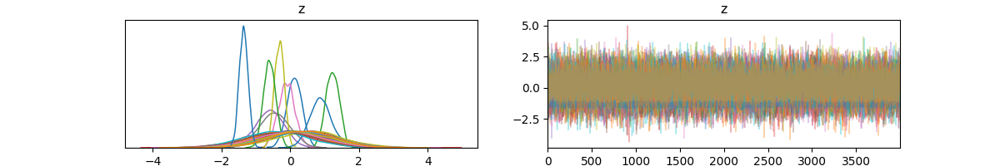 |
Corner |
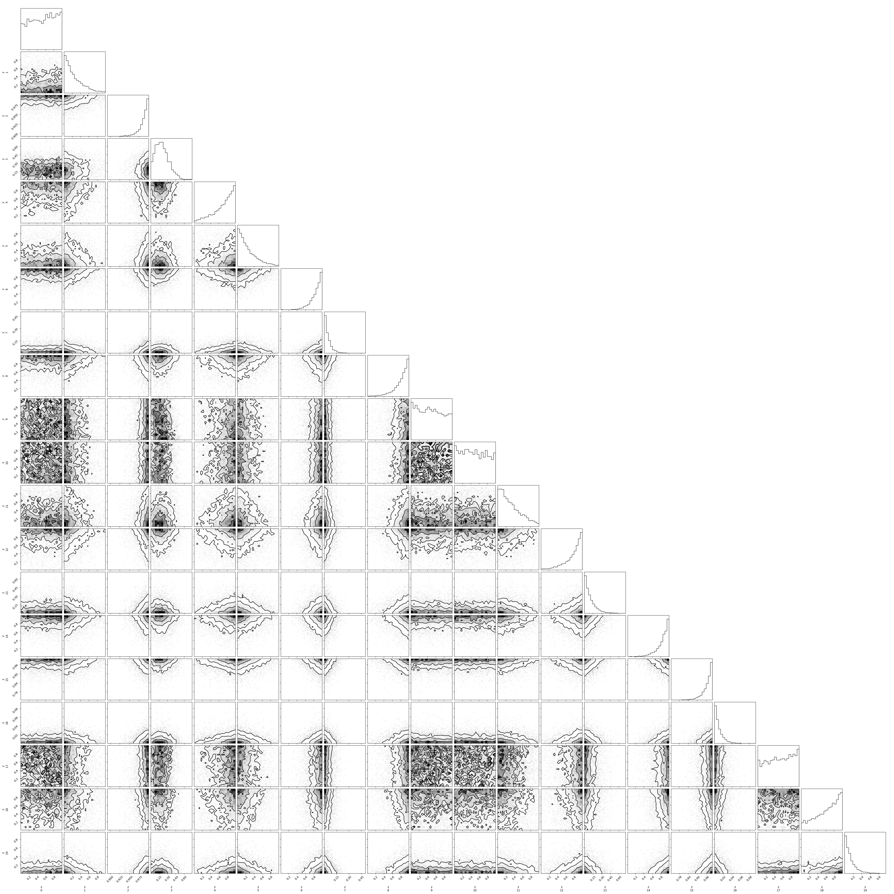 |
CI |
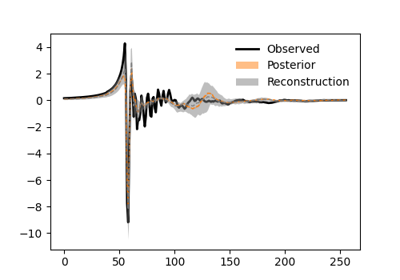 |
Exploring better number of Z#
from starccato_jax.trainer import train_vae, Config
for z_size in [4, 8, 12, 16, 20]:
config = Config(latent_dim=z_size, epochs=200)
train_vae(train_data, val_data, config,
save_dir=f"{HERE}/model_exploration/model_z{z_size}"
)
z_sizes = [4, 8, 12, 16, 20]
train_losses, val_losses = [], []
for z_size in z_sizes:
# read the losses
loss_fpath = f"{HERE}/model_exploration/model_z{z_size}/losses.txt"
data = np.loadtxt(loss_fpath)
train_losses.append(data[-1, 0])
val_losses.append(data[-1, 1])
## PLOT
plt.figure(figsize=(8, 4))
plt.plot(z_sizes, train_losses, label="Train Loss")
plt.plot(z_sizes, val_losses, label="Val Loss")
plt.xlabel('Latent Dimension')
plt.ylabel('Loss')
plt.legend()
At 500 epochs:
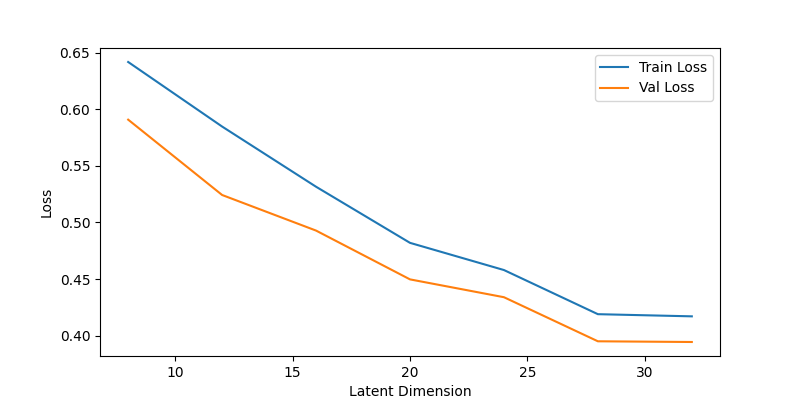